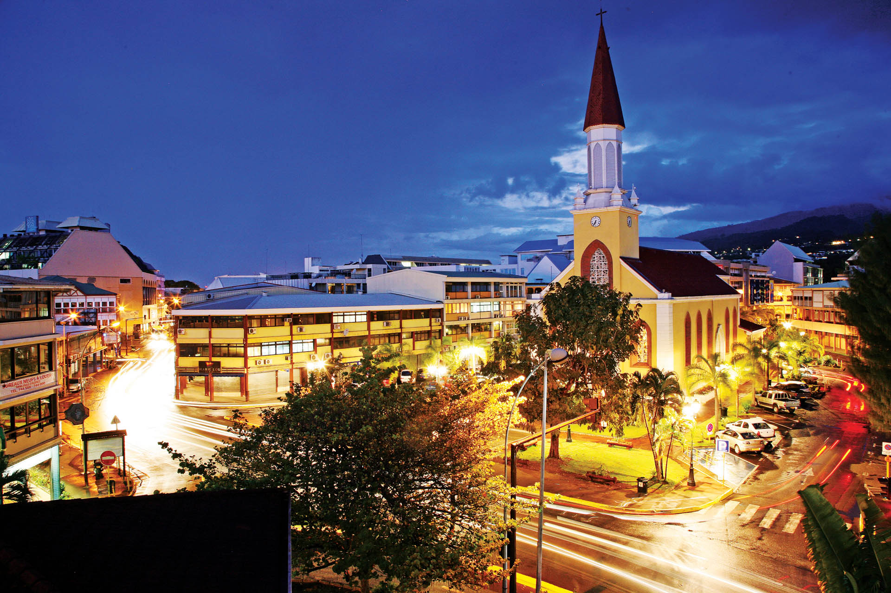
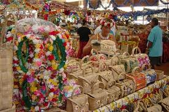
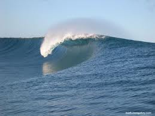
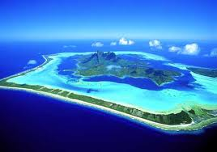
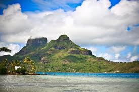
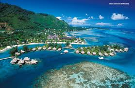
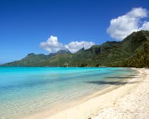

À Tahiti on retrouve certains attraits touristiques dans certaines villes qui bordent cette île. Mais il est vrai que ce ne sera pas sur l’île que vous trouverez des plages de sable blanc comme sur les autres îles qui entourent Tahiti, encore plus belles.
Malacca a été colonisée successivement par les Portugais, les Hollandais puis par l’Empire Britannique. Ces 3 pays ont laissé des traces de leur colonisation dans Malacca. Ajoutez à cela, les Chinois, les Indiens, les Musulmans, les Malais et vous avez un sacré mélange de cultures. Et bien c’est ce mélange de cultures qui caractérise Malacca. D’une rue à une autre, le décor change complètement. Enfin, pendant 2 jours à visiter Malacca, nous avons eu l’impression de voyager dans plusieurs pays à la fois.
À Tahiti, ce qui est aussi couramment fréquenté, c’est le marché de Papeete. Là, se vendent tous produits confondus, locaux. On y retrouve du poisson frais, des produits de la terre locaux, des bijoux, confectionnés par les femmes de l’île. Tout cela s’accompagne également de groupes de musique et de danse qui animent entre autre, la place du marché.
On y retrouve également un spot de surf.
Dans plusieurs autres villes, on peut visiter des musés, faire de la randonnée pédestre en se rafraîchissant dans les diverses chutes de l’île. Sur l’île même de Tahiti, on retrouve certains attraits cités ci-dessus. Mais lorsque les touristes viennent à Tahiti, celle-ci devient alors pour eux une sorte de transit, par lequel les touristes passent pour alors rejoindre les magnifiques îles situées aux alentours, telles que Moorea et Bora bora.
Bora Bora (ou Pora Pora), d’une superficie de 38 km², est située à 280 km au nord-ouest de Tahiti. Elle a émergé des eaux il y a environ 3 millions d’années et a, depuis, lentement subi les mouvements des plaques continentales, phénomène aboutissant à l’éloignement de son point chaud, sort de toutes les îles en Polynésie. Pourtant Bora Bora a une caractéristique géologique bien particulière puisqu’elle se situe à mi-chemin entre île haute et île basse (atoll).
De l’affaissement du volcan principal, le mont Otemanu culminant à 727 mètres, doublé du fabuleux Mont Pahia (626 mètres), est créé son immense lagon et son récif corallien avec son chapelet de motu= îles(motu One, motu Mute, motu Piti Aau..) aux somptueuses plages de sable blanc encerclant l’île principale. L’unique passe, Teavanui, reliant l’océan au lagon est située en face du village principal Vaitape, sur la côte ouest de l’île.
Moorea, jadis nommée Aimeho (ou Eimeo), émergée des eaux il y a trois millions d’années, a la forme d’un trident avec ses deux baies splendides (Cook et Opunohu). Elle compte 16000 habitants concentrés dans de nombreux villages côtiers : Maharepa, Paopao, Haapiti, Afareaitu, Vaiare, pour une superficie de 134 km². Moorea est située à 17 km de Tahiti et est fréquemment appelée « l’île sœur ». Elle compte 8 montagnes, dont le mont Tohiea culminant à 1207 m. Le nom de Moorea (Mo’o=lézard rea =jaune) proviendrait de la légende selon laquelle un énorme lézard jaune aurait ouvert de deux coups de queue les baies d’Opunohu et de Cook.
Vous trouverez à Moorea, parfois décrite comme un gigantesque jardin aux senteurs tropicales, une végétation luxuriante, de paisibles rivières, des cascades, de beaux farés (paillotes) aux toits de pandanus entourés de magnifiques jardins. Quelques belles plages de sable blanc surgissent çà et là : – plage de Temae, entre le port de Vaiare et l’aéroport. – plage d’Opunohu, longeant la baie du même nom, équipée d’aires de pique-nique ombragées. – plage de Haapiti et ses magnifiques motu (îlots) de Moea- Inoa et Fareone accessibles en bateau.
.jpg)